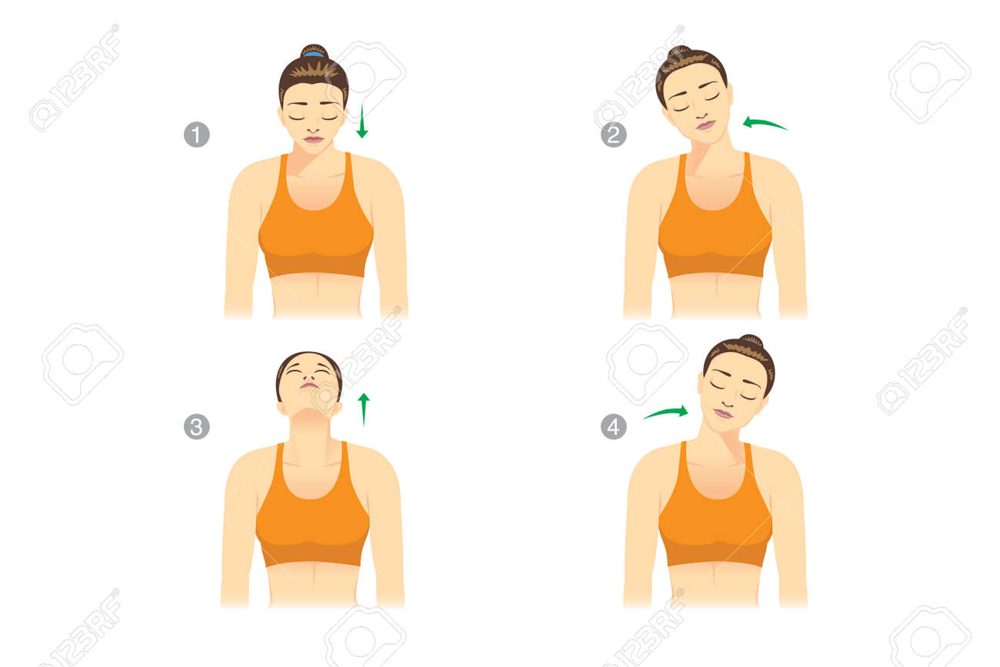
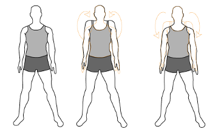
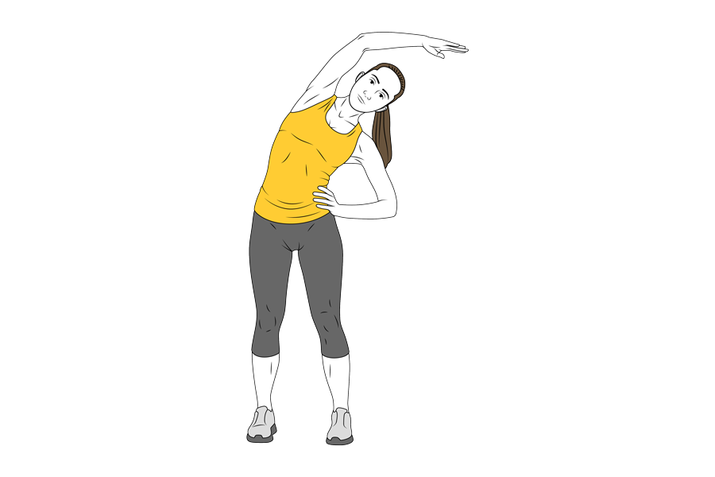
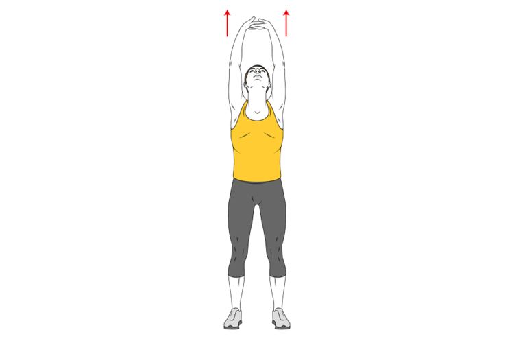
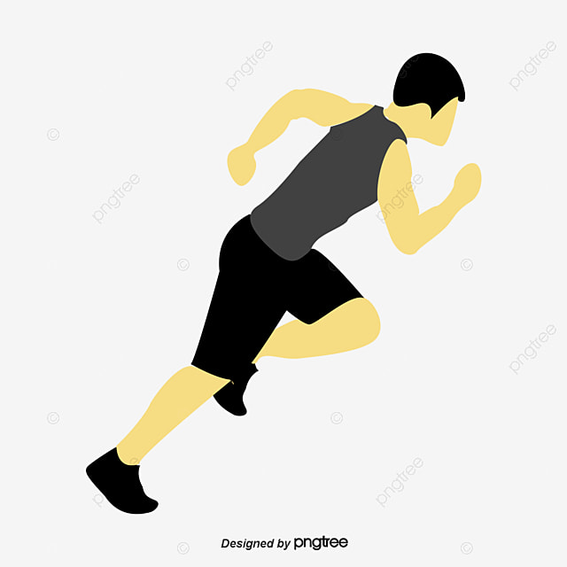
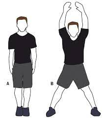
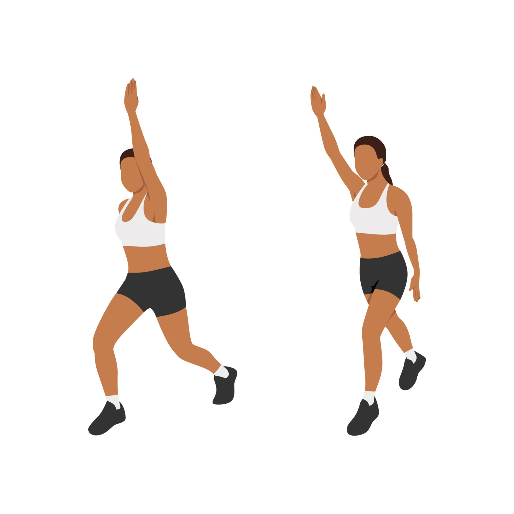

El ejercicio físico juega un papel fundamental en la vida de las personas y tiene una gran importancia en diversos aspectos de la salud y el bienestar. El ejercicio es esencial para mantener un estilo de vida saludable y prevenir una serie de problemas de salud, ya sea a través de actividades aeróbicas, entrenamiento de fuerza, yoga, o cualquier otra forma de actividad física, incorporar el ejercicio de manera regular puede tener un impacto positivo en todos los aspectos de la vida.
El ejercicio puede ayudar a prevenir el aumento de peso excesivo o ayudar a mantener la pérdida de peso. Cuando realizas actividad física, quemas calorías. Mientras más intensa sea la actividad, más calorías quemarás.

El ejercicio regular ayuda a prevenir o manejar muchos problemas e inquietudes de salud, entre ellos: Accidente cerebrovascular, síndrome metabólico, presión arterial alta, diabetes tipo 2, depresión, ansiedad, muchos tipos de cáncer, artritis y caídas. También puede ayudar a mejorar la función cognitiva y ayuda a reducir el riesgo de muerte por cualquier causa.

La actividad física estimula varias sustancias químicas cerebrales que pueden hacer que te sientas más feliz, más relajado y menos ansioso, es posible que también te sientas mejor sobre tu aspecto y sobre ti mismo si haces ejercicios regularmente, lo cual puede aumentar tu confianza y mejorar tu autoestima.

La actividad física regular puede mejorar la fuerza muscular y aumentar la resistencia. El ejercicio suministra oxígeno y nutrientes a los tejidos y ayuda a que el sistema cardiovascular funcione de manera más eficiente. Y cuando tu salud cardíaca y pulmonar mejora, tienes más energía para hacer las tareas diarias.

La actividad física regular puede ayudarte a quedarte dormido más rápido, a dormir mejor y más profundamente. Simplemente no hagas ejercicio demasiado cerca de la hora de acostarte, porque podrías tener demasiada energía como para irte a dormir.

La actividad física regular puede mejorar los niveles de energía y aumentar tu confianza sobre tu apariencia física, lo que puede estimular tu vida sexual.

El ejercicio y la actividad física pueden ser agradables. Te dan la oportunidad de relajarte, disfrutar del aire libre o simplemente participar en actividades que te hacen feliz. La actividad física también puede ayudarte a conectarte con tu familia o amigos en un ambiente social divertido.

| Ejercicio | Explicación |
|---|---|
|  | Movimiento de cabeza: este ejercicio nos permite calentar los músculos del cuello, repetirás cada uno de los 3 movimientos a continuación 6 veces. 1) Gira tu cabeza lentamente hacia la derecha e izquierda; 2) inclina la cabeza hacia lado y lado; 3) Rota tu cabeza dibujando círculos. |
|  | Rotación de hombros: dibuja círculos suavemente con tus hombros hacia adelante y luego hacia atrás. |
|  | Estiramiento de brazos: separa un poco más las piernas y estira el brazo derecho hacia arriba y a la izquierda, inclinando levemente el torso, mantén la posición por algunos segundos. |
|  | Estiramiento de piernas: manteniendo la separación de las piernas levanta ambos brazos haciendo un movimiento circular hacia afuera y estírate como si quisieras alcanzar el cielo. Suavemente descenderás hasta tocar el suelo, mantente en esta posición unos segundos y regresa a tu posición inicial. |
|  | Corre en el lugar: este ejercicio no necesita mayor explicación. |
|  | Saltos o Jump-Jacks: te pararás con las piernas juntas y los brazos al costado del cuerpo, luego saltarás separando tus piernas hacia los lados y llevando tus brazos al mismo tiempo hacia la cabeza. |
|  | Tijeras: a similitud del ejercicio ejercicio anterior realizarás saltos pero esta vez llevando una pierna hacia delante y otra hacia atrás simultáneamente. |